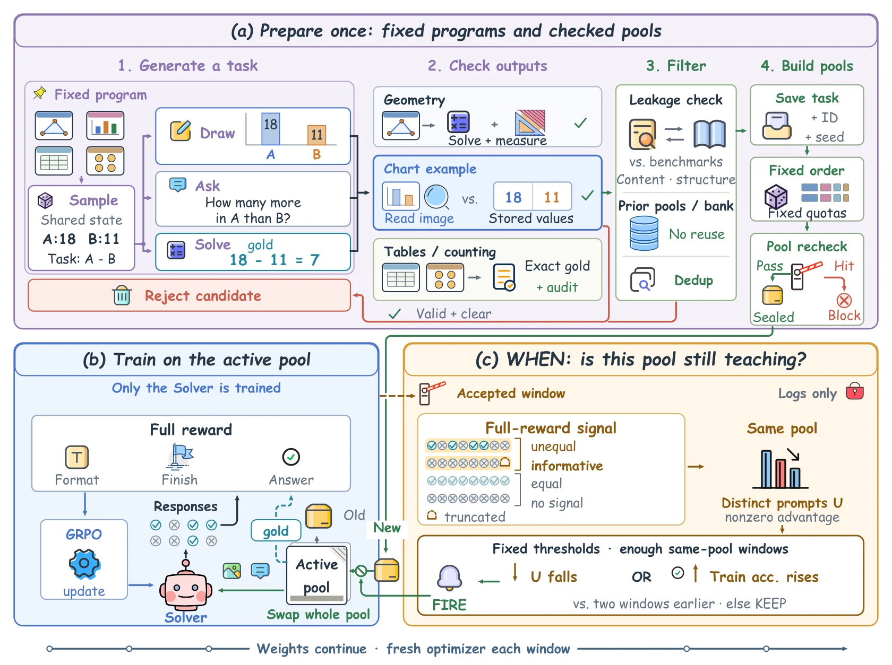
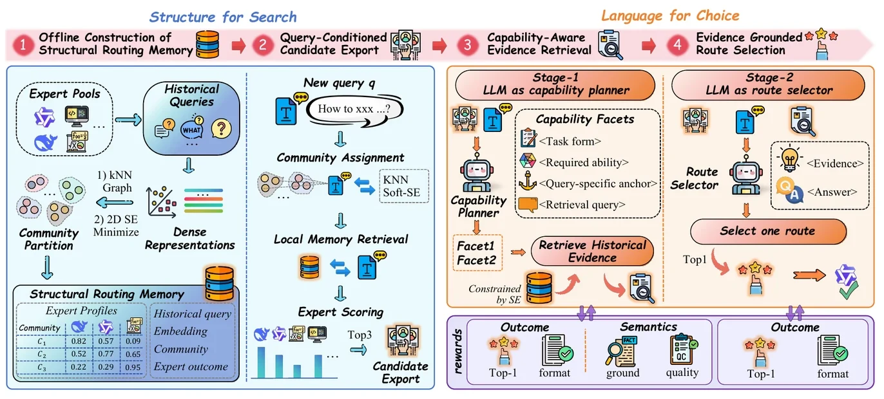
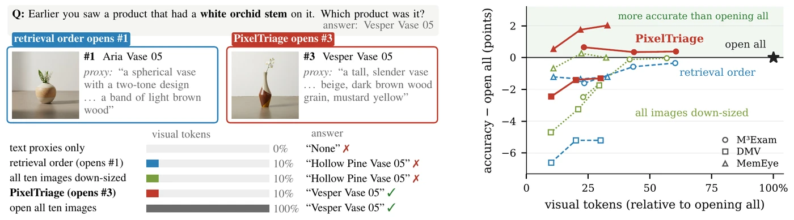
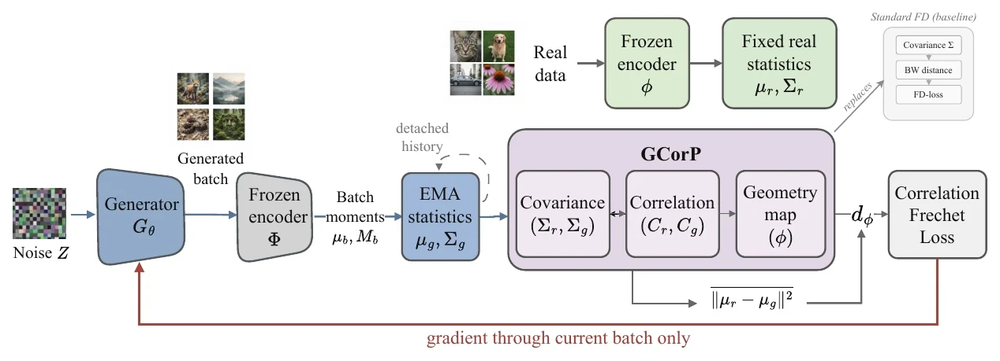
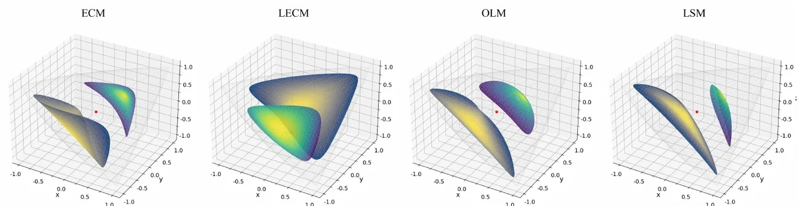
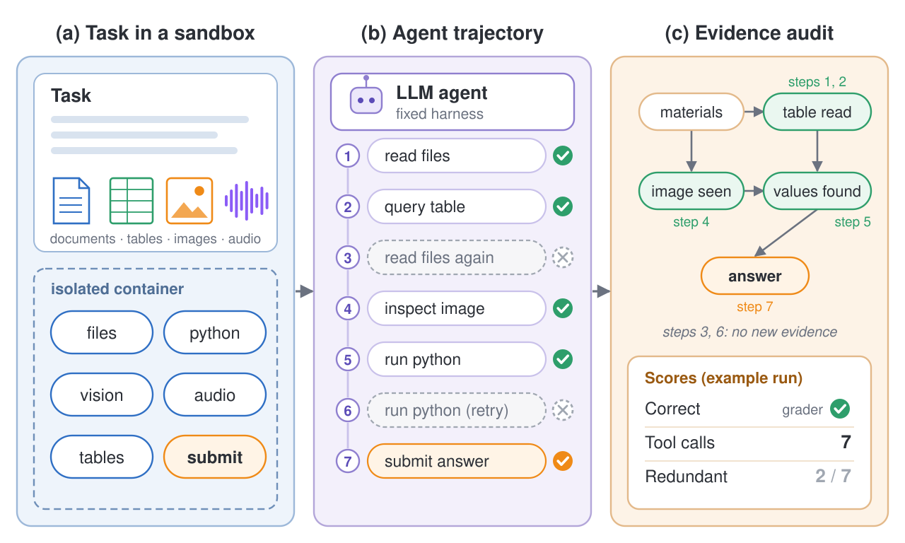

I received my MSc in Advanced Statistics and Data Science from The Chinese University of Hong Kong in 2026. Before that, I received my BSc in Data Science from Xi'an Jiaotong University. I am a Research Assistant in the MHUG lab at the University of Trento, supervised by Prof. Nicu Sebe and Ziheng Chen. My research focuses on LLMs, vision-language models and agentic RL: models that keep improving from experience they generate themselves, and multimodal agents that act over many steps. I also work on geometric deep learning on SPD and correlation matrices.
Education
- 2025.09 – 2026.07, MSc in Advanced Statistics and Data Science, The Chinese University of Hong Kong.
- 2021.09 – 2025.06, BSc in Data Science, Jinhe Center, Xi'an Jiaotong University.
Research Experience
- 2026.06 – now, Xiaomi. Project lead of A-RSI.
- 2025.02 – now, University of Trento, supervised by Prof. Nicu Sebe and Ziheng Chen. Geometric deep learning on SPD and correlation matrices.
Publications
* equal contribution § project lead † corresponding author

A-RSI: Adaptive Task Refresh for Zero-Data Multimodal Self-Improvement
Yu Liu*, Youxing Li*§, Yuedong Tan*, Zhiwei Yang, Zihan Su, Hanqi Feng, Shaojie Zhang, Libin Liao, Zihao Wan, Chenxu Wu, Cong Cao†, Fangfang Yuan, Yanbing Liu, Ziheng Chen, Pei Fu†, Radu Timofte, Zongwei Wu, Nicu Sebe, Barnabas Poczos, Jian Luan
Project | arXiv | Hugging Face #2 Paper of the Day
- Refreshes the training task pool when the model's own training logs show the learning signal has faded.
- Generates multimodal tasks from model-written programs with computed answers, requiring no external data.
- Improves Qwen3-VL-8B on all 11 benchmarks, from 57.77 to 61.05 on average.

Structural Entropy Guided Capability-Aware Expert Routing
Zhiwei Yang, Yu Liu, Youxing Li, Yuedong Tan, Haimei Qin, Shaojie Zhang, Lei Jiang, Yanbing Liu, Pei Fu
- Routes each query to one LLM from a heterogeneous expert pool before any expert is called.
- Builds candidate sets by partitioning a query–expert outcome graph with structural entropy.
- Trains a capability planner and a route selector with GRPO; evaluated on 20 benchmarks.

Decide Before You Look: Learning Which Retrieved Memories Deserve Pixels
Youxing Li
- Predicts which retrieved image memories are worth sending as pixels before the answering model runs.
- Trains a small triage model on synthetic episodes labeled by a frozen 27B model.
- Cuts visual tokens to 11–23% without accuracy loss on three benchmarks; transfers to a 397B answering model.

GCorP: Global Correlation Pooling
Youxing Li, Zihan Su, Nicu Sebe, Ziheng Chen†
- Pools scale-invariant correlation matrices with flat and hyperbolic geometry-specific heads.
- Shows that flat correlation MLR trains exactly with Euclidean SGD, without tangent-space trivialization.
- Validates on image classification, EEG foundation models, and FD-loss post-training of image generators.

Riemannian Sliced-Wasserstein Distances on Correlation Matrices
Youxing Li, Nicu Sebe, Ziheng Chen†
- Introduces sliced-Wasserstein regularization on full-rank correlation matrices (CorSW).
- Covers four flat pullback metrics and a hyperbolic PHCM branch with Busemann and geodesic slices.
- Improves downstream performance across datasets and architectures at O(d2) projection cost.
Projects

ToolsBench: Correctness and Efficiency of Tool Use
Contributor
- Benchmarks LLM agents on multi-step tool-use tasks over documents, tables, images, and audio in isolated containers.
- Scores final-answer correctness together with the number of tool calls spent.
- Audits every call against a step-level evidence graph to measure redundancy.
Outside research, I love hitting the gym 🏋️, love music 🎧, and love playing the drums 🥁. Always up for a chat about any of them!
Built on AcadHomepage.